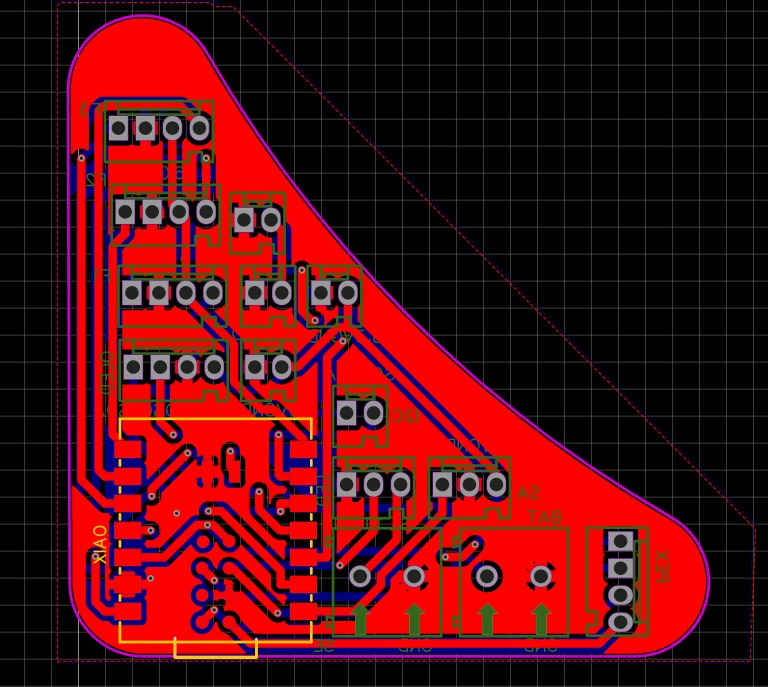
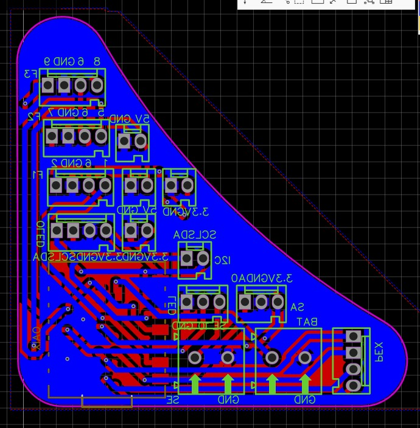
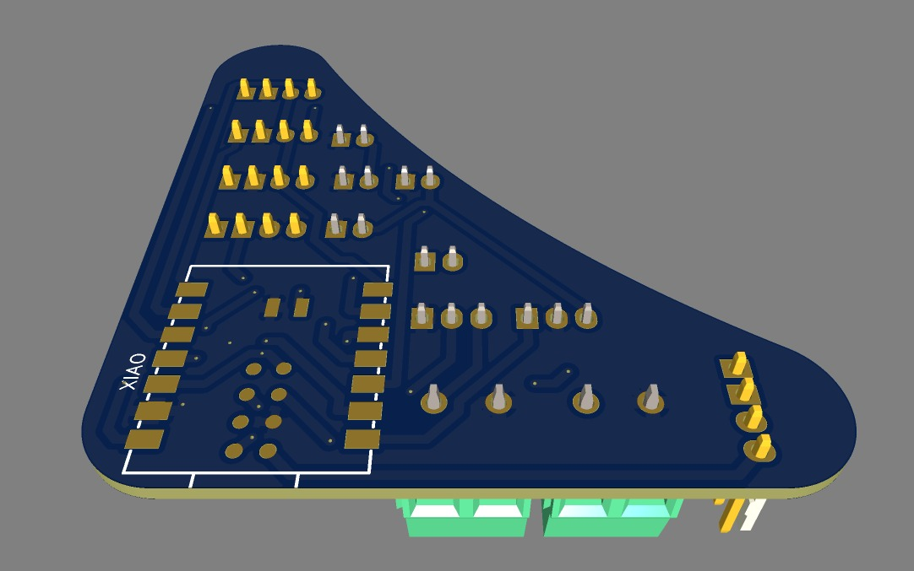
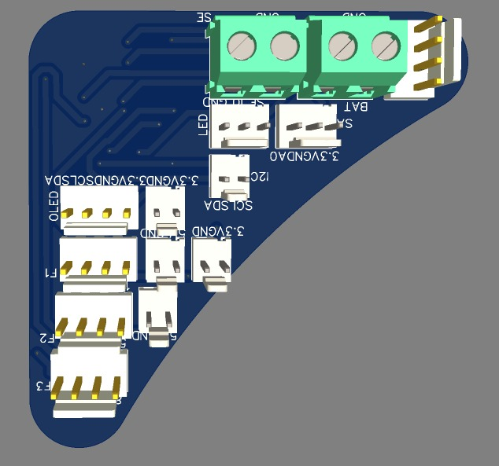
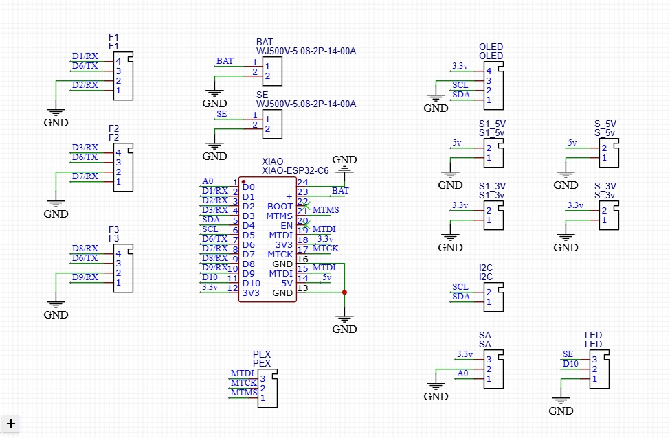
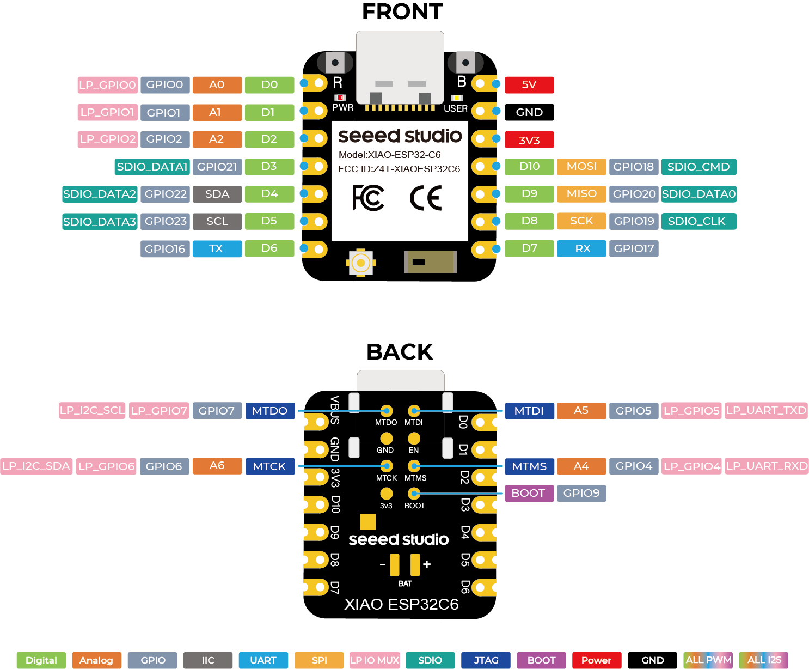

New board integration, V3 firmware, node interface, and dice-state behavior.
Sprint 4 documents how the ready-to-fabricate PCB direction connects to the current V3 firmware. It brings the pinout, board package, packet logic, OLED/LED interface, and validation checklist into one contributor-facing reference.
Sprint Scope
Sprint 4 is an integration and documentation sprint. It does not replace the Sprint 3 fabrication package. Instead, it explains how that board direction is used by the V3 program and what needs to be tested before the next physical build.
- Board base: Sprint 3 PCB package in
BUILD-FILES/pcb-designs/fab-vine-node-sprint3/. - Integration notes:
BUILD-FILES/pcb-designs/fab-vine-node-sprint4/README.md. - Current V3 firmware:
NODE-LOGIC/fab-vine-node/V3/V3.ino. - Packet communication helper:
NODE-LOGIC/fab-vine-node/V3/src/PacketCommunication.h. - Public manual page:
MANUALS/node-sprint4-integration.html.
Repository Placement
The sprint files are intentionally split by responsibility so the repository remains easy to review.
Human-readable manuals live in MANUALS, fabrication assets live in BUILD-FILES,
and microcontroller code lives in NODE-LOGIC.
| Content | Location | Reason |
|---|---|---|
| Contributor-facing Sprint 4 manual | MANUALS/node-sprint4-integration.html | Browsable from the public manuals index. |
| Board integration notes | BUILD-FILES/pcb-designs/fab-vine-node-sprint4/README.md | Documents hardware decisions without mixing them into firmware. |
| V3 node firmware | NODE-LOGIC/fab-vine-node/V3/ | Keeps the current program next to its packet helper. |
| Fabrication-ready PCB package | BUILD-FILES/pcb-designs/fab-vine-node-sprint3/ | Contains Gerbers, schematic, previews, 3D model, and pinout references. |
Board Package
The current board package targets the Seeed Studio XIAO ESP32-C6 and moves the neighbor system from simple detect-to-ground contacts into active serial-style face communication. Each node uses one shared transmit pin and one receive pin per face.
Board Previews
These previews come from the active Sprint 3 board package. Sprint 4 uses them as the physical reference while documenting how the V3 firmware should behave on this hardware direction.

Top copper/layout preview.

Bottom copper/layout preview.

Top 3D preview.

Bottom 3D preview.
Schematic Reference
The schematic shows the XIAO ESP32-C6, face connectors, OLED pins, LED data line, power rails, and expansion headers. For Sprint 4, the most important check is that each physical face connector correctly crosses one board's TX into the other board's RX.

Sprint 3 schematic used as the hardware base for Sprint 4 firmware integration.
XIAO ESP32-C6 Pinout
The official XIAO ESP32-C6 pinout remains the base reference for checking Arduino pin names against the physical pads and GPIO functions used by the board.

Official XIAO ESP32-C6 pinout reference used to verify the Fab Vine Sprint 3/Sprint 4 mapping.
Active Pin Mapping
V3 matches the active TX/RX direction: D6 broadcasts the node packet and each face listens
on a dedicated RX pin. The OLED and LED strip keep their own dedicated pins.
| Function | XIAO pin | V3 use | Physical face |
|---|---|---|---|
| Common TX to all faces | D6 | Serial1 sends packets to neighbors. | Shared by all six faces. |
| Face 1 RX | D9 | Receives packets from the bottom connector. | Bottom |
| Face 2 RX | D1 | Receives packets from the front connector. | Front |
| Face 3 RX | D2 | Receives packets from the left connector. | Left |
| Face 4 RX | D3 | Receives packets from the right connector. | Right |
| Face 5 RX | D8 | Receives packets from the back/posterior connector. | Back / posterior |
| Face 6 RX | D7 | Receives packets from the top connector. | Top |
| OLED SDA | D4 | I2C display data. | Interface |
| OLED SCL | D5 | I2C display clock. | Interface |
| LED data | D10 | Controls the 40-pixel WS2812B / NeoPixel strip. | Lighting |
| Test button | A0 | Bench input used to reset selfState. | Development only unless kept in the final board. |
Face Connector Logic
Every board can remain identical if each connector is mirrored so that TX lands on the opposite board's RX and both boards share ground. This is the key physical rule behind the new board direction.
Each face carries:
GND
TX_COMMON = D6
RX_FACE_n = unique receive pin
When two modules connect:
Module A GND <----> Module B GND
Module A TX ----> Module B RX
Module A RX <---- Module B TXV3 Firmware Architecture
The V3 program turns the node into a social unit that broadcasts its internal state, listens to all six faces, expires inactive neighbors, and refreshes the OLED and LEDs without blocking the main loop.
V3 loop overview:
1. Blink the built-in LED as a heartbeat.
2. Read the test button and reset local state when pressed.
3. Every second, send PacketData through D6 / Serial1.
4. Listen to six RX-only SoftwareSerial ports.
5. Mark a face as connected when a valid packet arrives.
6. Expire a face after 3000 ms without a valid packet.
7. Update OLED and LEDs on independent frame timers.
8. Every 2 seconds, recompute selfState from active neighbors.| File | Responsibility |
|---|---|
V3.ino | Main node behavior: pins, serial ports, neighbor tracking, OLED, LEDs, and dice-state logic. |
src/PacketCommunication.h | Packet framing, checksum generation, packet validation, send helper, and receive helper. |
Packet Format
Nodes exchange a small binary payload. The helper wraps the payload with a start marker, checksum complement, and end marker so each receiver can reject malformed packets.
PacketData payload:
struct PacketData {
uint8_t state;
uint8_t neighborCount[2];
};
Frame:
START_MARKER 0xAA
payload bytes
checksum complement
END_MARKER 0x55
The current packet already supports state propagation. The neighborCount field is available
for grid-position experiments and may need a clearer structure before larger multi-node tests.
OLED And LED Interface
V3 replaces the earlier numeric debug display with a character-like interface. The OLED draws eyes and small face markers; the LED strip shows the social state through breathing color and intensity.
EyesNormal: stable default expression.EyesBlink: short blink while the node is alone.EyesWink: small social gesture when one or two neighbors are connected.EyesLookLeft/EyesLookRight: lateral glances when three or more faces are connected.- Open face markers remain visible while a face is waiting for a neighbor.
- Connected face markers disappear once a valid packet is received on that face.
- Alone state: purple breathing LEDs.
- Connected state: blue/green breathing LEDs with no red channel.
- Three or more neighbors: stronger blue and a slightly faster breathing period.
Dice-State Logic
selfState is the node's dice-like internal value. Each node starts with a pseudo-random
value between 5 and 254. When neighbors are active, the node averages the received states and gradually
moves its own value toward that target.
Startup:
selfState = random(5, 254)
Every compute cycle:
targetValue = average(active neighbor states)
selfState = lerp(selfState, targetValue, 0.187)
blinkInterval = selfState * 3This makes the network feel less binary. A node does not simply switch on or off; its behavior drifts toward the neighborhood, creating a soft synchronization effect across connected modules.
Validation Checklist
- Connect two real boards face-to-face and confirm TX/RX crossing works in both directions.
- Confirm the physical connector order matches the V3 face map: bottom, front, left, right, back, top.
- Test each RX pin individually before testing several faces at once.
- Confirm
SoftwareSerialremains stable when multiple faces receive traffic close together. - Confirm OLED and LED refresh stay smooth while packets arrive continuously.
- Validate LED power routing before connecting many modules to the same supply.
- Decide whether the
A0test button stays in production or remains a bench-only feature. - Decide whether the packet needs stronger position data for larger grid assemblies.